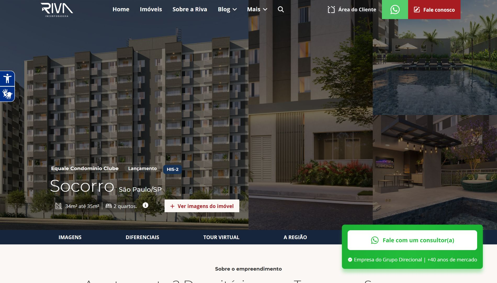
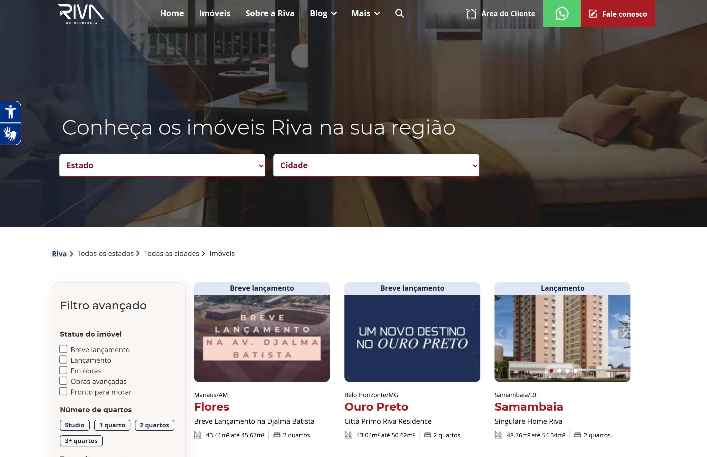

Riva Incorporadora
Imobiliário · WordPress · Sage 10 · Tailwind CSS · Grupo Direcional
Contexto
- A Riva Incorporadora é uma das maiores do Brasil, parte do Grupo Direcional — com atuação em SP, RJ, MG, DF e AM
- O site existente não refletia o posicionamento da marca e dificultava a jornada do usuário na busca por empreendimentos
- Alta concorrência no mercado imobiliário digital exigia um site tecnicamente robusto e bem posicionado no Google
Desafios
- Redesign completo da identidade visual sem comprometer o SEO já conquistado
- Estruturar UX que facilitasse a descoberta de imóveis por estado, tipo e faixa de preço
- Performance em mobile — público imobiliário acessa majoritariamente pelo celular
- Escala de conteúdo: múltiplos empreendimentos com galeria, plantas, localização e formulário de interesse
Solução
- Tema customizado com Sage 10 + Tailwind CSS — componentizado, sem CSS morto, build otimizado
- Custom Post Types para empreendimentos com filtros dinâmicos por localização e tipologia
- Otimização focada em Core Web Vitals e Lighthouse mobile
- SEO técnico: schema markup, estrutura de URLs, sitemap e meta tags por empreendimento
- Integração de formulários de interesse com rastreamento de conversão
Resultados
✓
Identidade visual renovada
✓
UX de busca de imóveis
✓
SEO técnico aplicado
Tecnologias
Galeria

